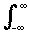
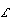
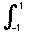
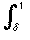
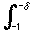
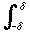
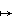

Definition
If f and g are suitable functions on R, then the convolution f * g is the function defined by f * g(x) =  f (x - t) g(t) dt (suitable means ensuring that the integral exists).
This concept of convolution is important in the theory of Laplace transforms among other places.
It turns out that the set X of suitable functions is than a ring under the operations + and * in much the same way that X forms a ring under the usual addition and multiplication.
The Laplace transform  is then a ring homomorphism from (X + *) to (X + .)
That is: (f + g) = (f) + (g) and (f * g) = (f).(g).
Thinking about convolution as an algebraic operation, we may ask: Is there an identity element for this operation?
The answer is: Almost!
The English mathematician Paul Dirac (1902 to 1984) one of the most important founders of Quantum Mechanics, invented the δ-function.
This is a "function" with the properties:
δ(x) = 0 if x ≠ 0 and δ(x) dx = 1.
You should think of it as "The density function of a unit mass or charge at the origin".
Of course it is not really a function since we would have to have δ(0) = ∞ in a rather special way, but it turns out that provided one only uses it in integrals everything is OK.
For example, f * δ(x) = f (x - t) δ(t) dt = f (x) since δ(t) = 0 except at t = 0.
What we will now do is find a sequence of functions (Kn) which approximate the δ-function. The sequence (Kn* f) will then approximate δ * f = f.

Definition
The n-th Landau kernel function Kn= cn(1 - x2)n for x ∈ [-1, 1] and 0 otherwise, where cn is chosen so that Kn = 1.
Here are graphs of some of these functions:
Note that these are the graphs of the density functions of unit masses concentrated on smaller and smaller areas.
Lemma
If f is a continuous function on the interval [-1, 1] then Kn * f is a polynomial.
Proof
Kn* f (x) = Kn(x - t)f (t) dt and Kn is a polynomial and so Kn(x - t) can be expanded as g0(t) + g1(t) = ... + g2n(t)x2n and so the integral is a polynomial in x.
Lemma
The sequence (Kn * f)→ f in d∞.
Proof
We need to show that Kn has "most of its area" concentrated near x = 0.
First we estimate how big cn is:
(1 - t)2)ndt = 2(1 - t)n(1 + t)ndt ≥ 2 (1 - t)ndt = 2/(n+1).
Since Kn= 1 we must have cn≤ (n+1)/2.
[In fact, cn grows like a multiple of √n. For large n, cn is approximately 0.566√n.]
Look at the area under Kn which is not near 0.
Kn(t) dt = cn(1 - t2)ndt ≤ (n+1)/2 (1 - δ2)ndt
since Kn is decreasing on [δ, 1] and this is (n + 1)/2 (1-δ2)n(1-δ).
If r = 1 - δ2 then (n + 1)rn--> 0 as n→ ∞.
We are told that f is continuous and by a theorem we will prove in the next section we may assume that f is bounded by M (say).
If x ∈ [0, 1] then given ε > 0 we can find δ > 0 such that if |t| < δ then |f (x - t) - f (x)| < ε.
So now look at the convolution : Kn* f.
|f (x) - Kn* f (x)| = |f (x) - f (x - t)| Kn(t) dt =  +  + .
Now on [-1, -δ] and on [δ, 1] we have Kn(t) is small if we choose δ small. In fact, we can choose δ so that Kn(t) < ε/M here and then the first and third integrals are < ε.
For the middle integral, |f (x) - f (x - t)|Kn(t) dt ≤ εKn(t) dt < ε since Kn(t) dt = 1.
Thus |f (x) - Kn* f (x)| is small when n is large and we have our convergence. This completes the proof of the Weierstrass approximation theorem.

- If you take a function like x  |x| with a graph:
which is continuous but which is not differentiable at x = 0, then we can approximate it uniformly by polynomial functions which are (of course) all differentiable.
Thus the uniform limit of differentiable functions is not necessarily differentiable.
- The Weierstrass theorem is about functions which are continuous on a closed bounded inteval like [a, b].
Although one can define uniform limits of functions on (say) the whole real line R, there are continuous functions which "grow too fast" (like the exponential function ex) or grow too slowly (like sin(x)) to be approximated well on the whole line. Of course such functions can all be approximated well on a "finite bit" of R.

| Previous page (Properties of uniform convergence) | Contents | Next page (The intermediate value theorem) |